Word 1 — Семья
Семья
seem-YAHFamily
The word for the whole family unit.Russian Foundations
Семья и родственные связи
Every family begins with the people closest to you.
Learn how to name the people closest to you, talk about your parents and siblings, and begin describing your own family with confidence.
Learn how to name the people closest to you, talk about your parents and siblings, and begin describing your own family with confidence.
The first time you use speaking practice, your browser may ask for permission to use your microphone. Choose “Allow while visiting the site” so your spoken Russian can be heard and checked.
Family
The word for the whole family unit.Parents
Plural only — always used together.Mom
The everyday, casual word most families use.Mother
The more formal word — audio provided for both мама and мать.Dad
The everyday, casual word most families use.Father
The more formal word — audio provided for both папа and отец.Brother
A masculine family word.Sister
A feminine family word.Son
A masculine family word.Daughter
A feminine family word.You just learned семья, родители, and the rest of your immediate family. A few more surprises are hiding in that same vocabulary — a familiar word wearing a new shape, a question word ready to be used, and a small word that changes depending on who owns what.
Choose any Grammar Candy below to look closer. Open them in any order — each one is its own discovery.
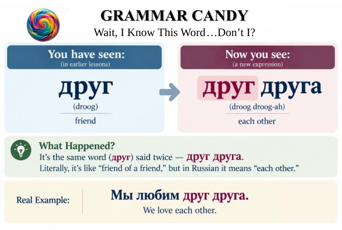
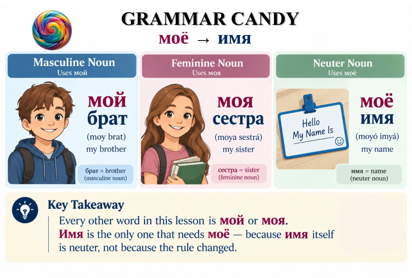
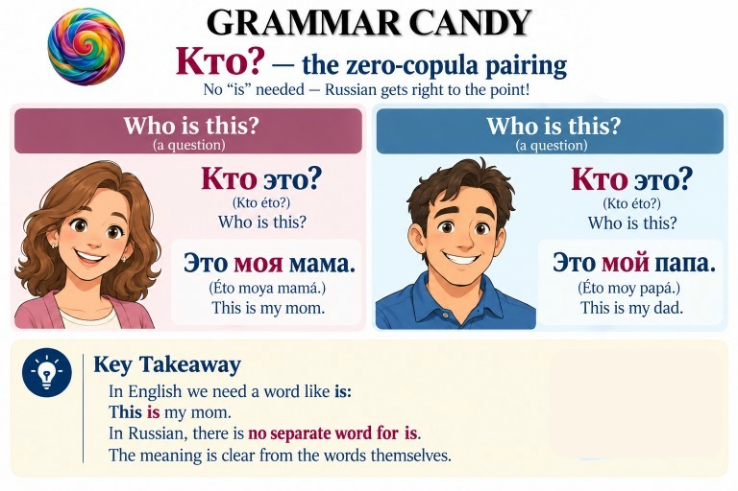
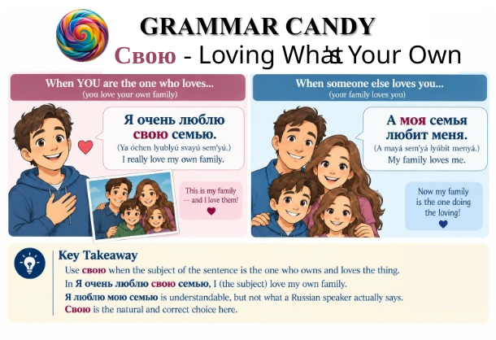
Родители looks difficult at first. Build it gradually instead of trying to say the entire word at once.
Now say the complete word several times. Begin slowly and let it become smoother as it becomes familiar.
You know your immediate family now — let's meet the rest of it. In this lesson, you'll name grandparents, aunts, uncles, cousins, and nieces and nephews, and start using pronouns beyond "my" to talk about someone else's family.
Grandmother
The everyday, neutral word.Grandma
The affectionate word — audio provided for both бабушка and бабуля.Grandfather
The everyday, neutral word.Grandpa
The affectionate word — audio provided for both дедушка and дедуля.Aunt
A feminine family word.Uncle
A masculine family word.Cousin (male)
Literally "cousin-brother" — built from брат, not a separate word.Cousin (female)
Literally "cousin-sister" — built from сестра, not a separate word.Nephew
A masculine family word.Niece
A feminine family word.You already know брат and сестра. Russian uses these familiar family words to build the idea of a cousin—and then those words change form when there is more than one.
Start with Discovery 1 to see how Russian builds “cousin.” Then open Discovery 2 to discover what changes when one cousin becomes more than one.
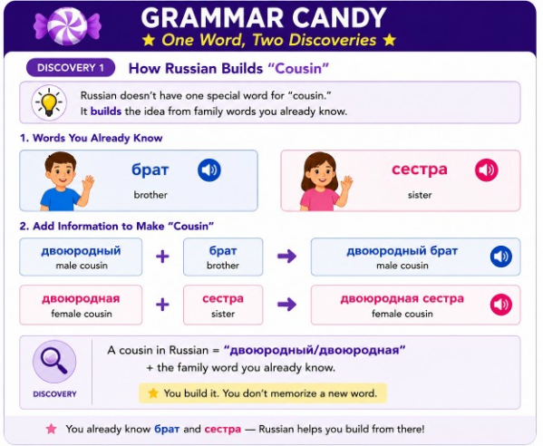
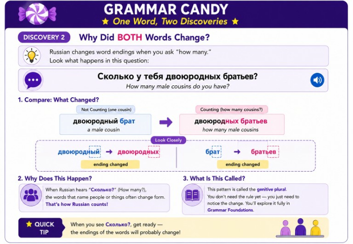
You already know the family member. Now watch what happens when Russian adds one more piece of information.
Until now, you have mostly talked about your family. Choose a word below and watch who the family belongs to change.
You are talking about Anna's brother. Which word would you choose?
Choose whose family you're asking about. Watch the question and answer change — and watch what stays exactly the same.
Learn how to talk about marriage and in-laws — and pick up a few surprising ways Russian handles these relationships.
Husband
A masculine family word.Wife
A feminine family word.Mother-in-law
A husband's mother, from his wife's point of view.Father-in-law
A husband's father, from his wife's point of view.You already know свекровь and свёкор. Russian has a few more surprises waiting in this lesson — about whose side an in-law is on, how marriage is described differently for a man and a woman, and just how far любить can go.
Choose any Grammar Candy below to look closer. Open them in any order — each one is its own discovery.
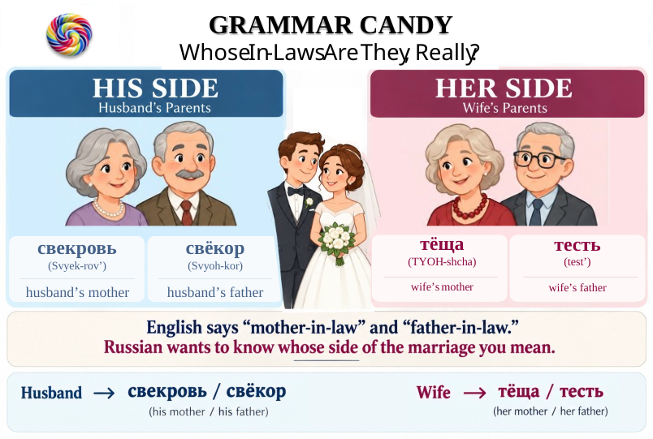
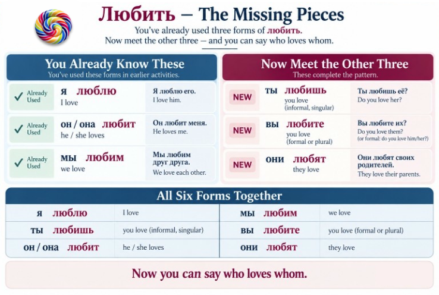
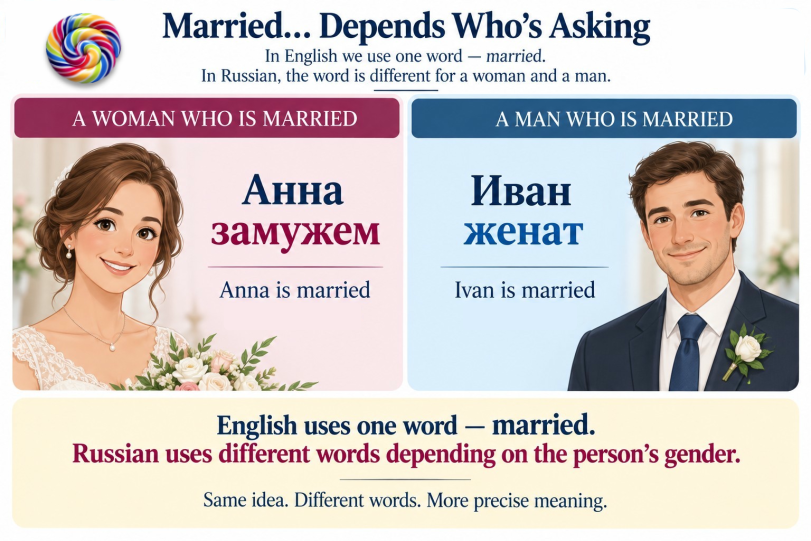
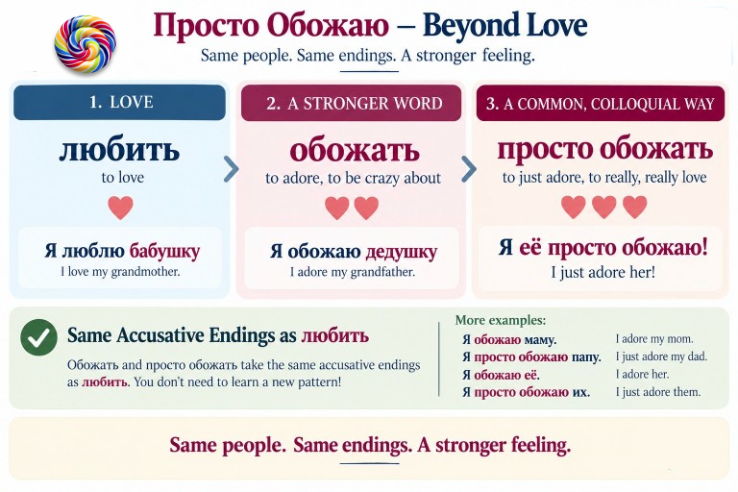
You've already used three forms of любить in Build. Choose a subject below and watch the verb change shape — the object stays exactly the same the whole time, so you can see just the verb move.
Fill in the blank: Они ___ свою семью. (They love their family.)
Turn the dials and watch the phrase change. Try every combination you can think of — right or wrong, correct or mismatched. There's no wrong way to explore here.
Choose a word from a pronoun in row one; then from the specific family relationship in rows two and three.
No dial to click this time. Read each family member below, then type the possessive that fits before it.
Type the word for "my" that belongs with each family member shown below.
Here's a sentence you already know. Something's about to change — see if you can predict what happens before you look.
Now let's change it up by saying: it's her brother, not mine. Ask yourself: Will the word for "brother" change?
Это не мой брат — это брат.
Now let's change it up by saying: it's his sister, not mine. Ask yourself: sister is a feminine word — will его change to match it?
Это не моя сестра — это сестра.
Now let's change it up by saying: we're asking about her name, not yours. Ask yourself: имя is a neuter word — твоё matched that. Will её also change to match?
Это не твоё имя — это имя.
Now let's change it up by saying: they're their parents, not mine. Ask yourself: родители is a plural word — мои matched that. Will их also change to match the plural?
Это не мои родители — это родители.
Read the English, type the Russian. No word bank this time — if you get stuck, press Listen and hear it before you try again.
Match each Russian phrase to what it means in English.
Read the English, say the Russian out loud. Not sure how it sounds? Press Listen first.
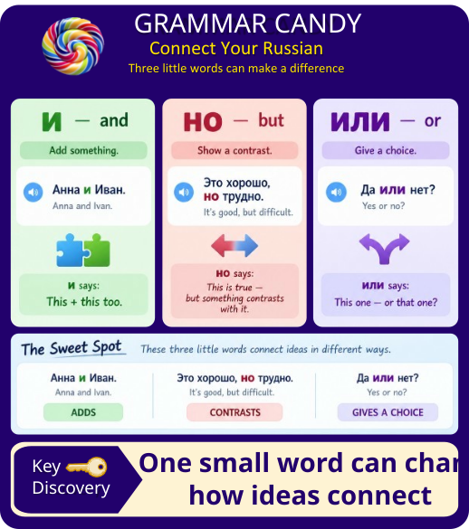
Now connect two things you know. Say the whole sentence out loud.
You already know the words. Now use them for real — build your own family tree in Russian, one relationship at a time, then prove you understand it.
Every box below is part of your family. Solve them one at a time — in whatever order they light up — by clicking the right piece out of the word bank below. Watch for words that look right but aren't.
You were born in 2008. These are your siblings. Predict their relationship to you.
Some of these look right but aren't — read carefully before you click.
Это ?
Each grandparent is labeled by whose side of the family they're on — trace it back one generation to work out what they are to you. Stage 1 and Stage 2 don't depend on each other — solve them in either order.
Some of these look right but aren't — read carefully before you click.
Это ?
Complete Stage 1 and Stage 2 to unlock this stage.
Same tracing logic, one generation further — and the cousin boxes belong to дядя, not тётя.
Some of these look right but aren't — read carefully before you click.
Это ?
🎧 Listening Room • Family Relationships
Listen for meaning, and not so much to word-for-word perfection.
You do not need to understand every word. Listen for what you do understand.
HEAR
First, listen for the overall shape of the message.
Ready when you are.
Select anything you remember hearing. You do not need the whole sentence.
Listening Room • Complete
You listened for meaning, caught familiar Russian, listened again with a purpose, followed changes, inferred meaning, and responded to connected Russian.
You did not need every word. You understood what was happening.
There's only one way to find out.
You already know enough Russian to begin making it yours. Use what you know, follow the clues, and discover how to say a little more about yourself.
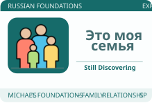
You're about to discover two ways to build this question in Russian. Don't focus on the different words for "your" just yet — look instead at how each question ends. Two of them end one way. One ends differently. Can you spot which?
Here we use твоей (the familiar "your") because we're talking to someone you know well, like a friend or a family member.
The genitive plural form of брат
(used after сколько?)
If the question was changed just a little, could you predict what it would look like in Russian? Here's the question re-worded —
How many brothers do you have?
Here we use вашей (the polite "your") because we're being polite — for example, with a teacher, a stranger, or an in-law.
The genitive plural form of дядя
(used after сколько?)
If the question was changed just a little, could you predict what it would look like in Russian? Here's the question re-worded —
How many uncles do you have?
We use у вас here, which also means "your" in a polite or plural sense. It's another way to ask "how many do you have?"
The genitive plural form of тётя
(used after сколько?)
If the question was changed just a little, could you predict what it would look like in Russian? Here's the question re-worded —
How many aunts are in your family?
You'll see six ways to ask the same question. Only two of them are correct — one for each pattern you've been using. Toggle your two picks, then check your answer.
"How many sisters are in your family?" and "How many sisters do you have?"
"How many children are in your family?" and "How many children do you have?"
You haven't learned this sentence. That's okay. You already know more than you think.
These words may look familiar. What do you notice about their shapes?
Click a word to reveal its meaning.
What do you think is being said about the family? Use natural English. You do not need an exact translation.
Click any word for a quick discovery. Look for the featured question word — it unlocks a little Grammar Candy. 🍬
You'll see what it means, a short example, and how it's used.
You already predicted the meaning. Now look closer — this sentence is teaching you two things at once.
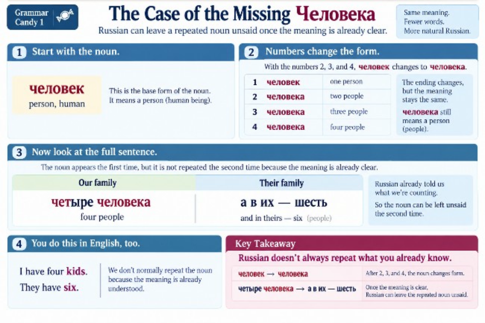
Add a person once. Use that person throughout the Family Identity Card.
You and each of your parents can add up to four siblings to your family tree.
Tell us what you call them and discover natural Russian words to express it.
Choose someone special and discover natural Russian ways to say what they mean to you.
Choose one or two feelings. We'll show you a natural way to express that meaning in Russian.
Click a feeling to add it.
Discover more ways to express how you feel in Russian
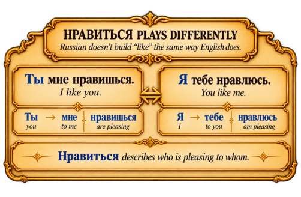
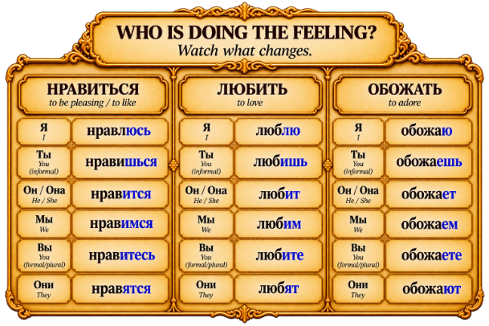
See how the same feelings work with other people in your life.
Choose a person, pick a feeling, and hear the Russian.
Choose one or two sentiments.
Your pets are part of your life too.
Add a pet, choose how you feel, and hear the Russian.
You already know how to talk about your family. Now discover something a family tree can't show you — the way Russian can make a familiar word sound warmer.
Look at the Russian below. The people don't change. What do you think does?
You already know these people. Listen to both words for each one.
What You Already Know
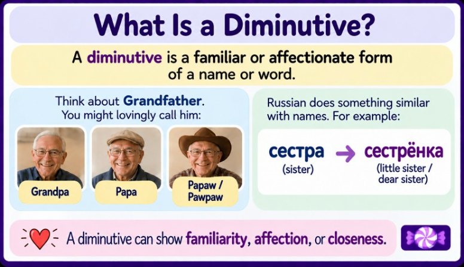
бабушка and бабуля are the same grandmother. дедушка and дедуля are the same grandfather. The family relationship didn't change. So what did?
You just discovered that Russian can change a family word to make it sound warmer. Let's see if that idea transfers to a word you already know.
Don't translate братик yet. If бабуля can sound warmer than бабушка, what do you think братик might be doing to брат?
Let's find out if you discovered a one-time trick, or something Russian actually does.
You've never learned this word. But does anything about it look familiar?
Same Pattern
Its Own Pattern
A Different Pattern Again
You've now seen all four words change to sound more affectionate. Look closely — do you think Russian changed all four of them in exactly the same way?
You do not need this to continue. But if you're curious, take a closer look at why these four words didn't all change the same way.
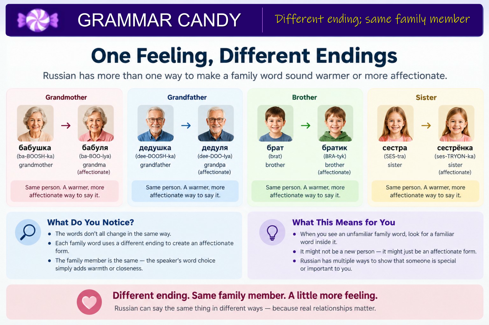
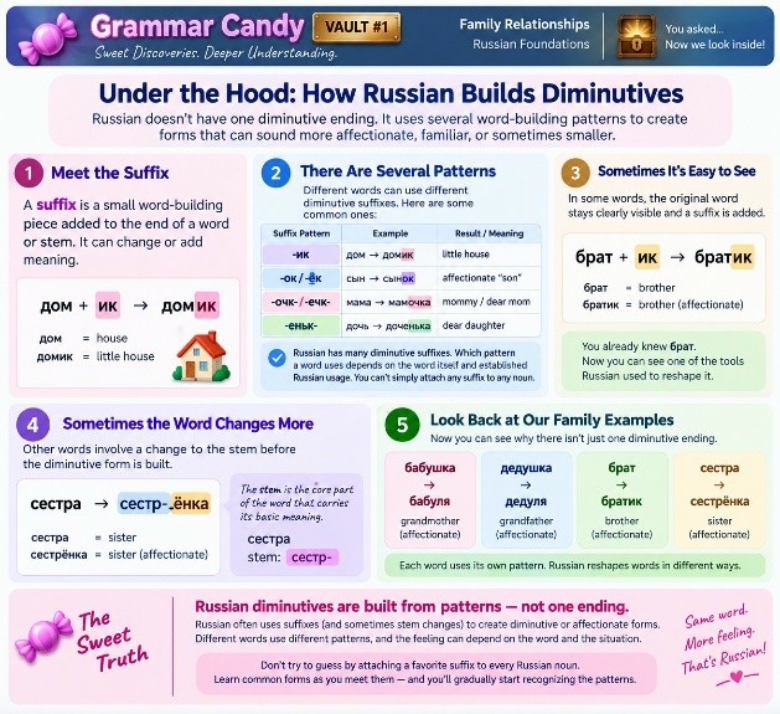
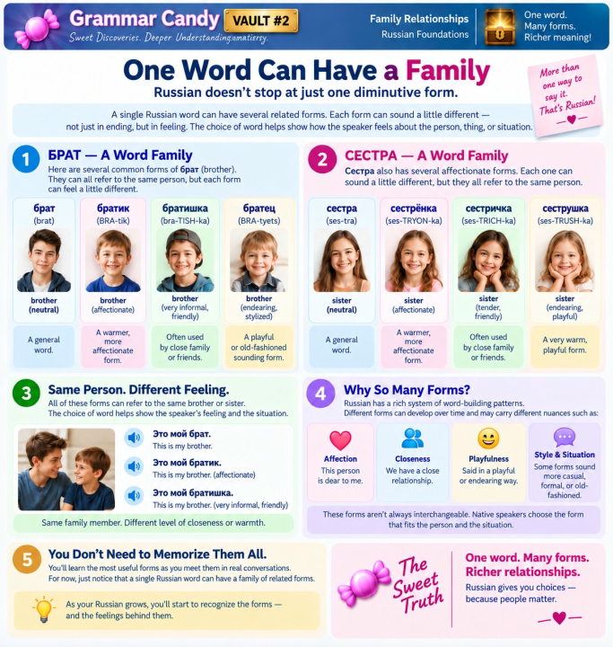
Sometimes a diminutive really is about size:
Now look at these:
Did the brother or mother physically become smaller?
With people — especially family words — a diminutive doesn't usually mean smaller. It can mean affection, warmth, tenderness, or familiarity instead.
The form gives you a clue. The situation helps you understand what that clue means.
🍬 Sweet Truth: A diminutive doesn't always make something smaller. Sometimes it makes the language warmer.
This isn't another morphology lesson — it's the synthesis. Four questions to ask yourself the next time you meet an unfamiliar Russian word.
🔑 The word gives you clues. Context helps give those clues meaning.
You want to say: "This is my grandpa, and this is my little brother." Tap words from the bank to fill in the blanks — some choices are close, but not quite right.
Fill both blanks above, then compare your sentence.
брат and дедушка are never wrong. But context and speaker choice matter — the same is true for сестра / сестрёнка and бабушка / бабуля.
So far, word choice has shown feeling. Russian has another way — a sentence can state it directly.
Я люблю брата — I love my brother. Я люблю братика — I love my brother, and the word itself adds warmth on top of what I already said.
Word choice can show feeling. A sentence can state feeling. Russian gives you both tools.
One More Thing Worth Noticing
If you looked up this verb in a dictionary, you wouldn't find люблю — you'd find the infinitive, the non-conjugated form.
любить changes shape depending on who's doing the loving — that's called conjugation. You'll see this up close in a future lesson. For now, just notice it: люблю isn't a different word from любить, it's the same word, wearing a different shape.
Why Я люблю and not just люблю?
Good question — люблю already tells you who's doing the loving. The ending -ю marks "I," so technically the verb alone carries that information.
But unlike some languages, standard Russian doesn't usually drop the pronoun. Я люблю is the normal, expected way to say it — leaving out Я isn't wrong, exactly, but it's not the default either. As a learner, include it.
No training wheels this time. Here's a family word you've never seen.
Does any part remind you of a family word you already know?
Type your answers below, and then tell us how you knew.
When you encounter an unfamiliar Russian family word, don't immediately assume it's a completely new relative. Look inside the word. You may already know who the person is.
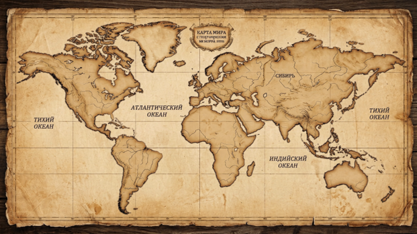
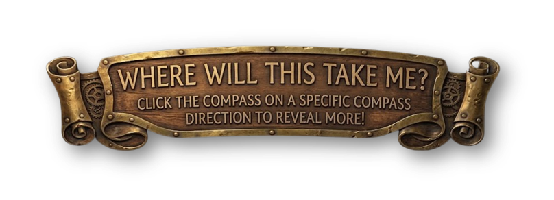
Click the compass to find where to go next.
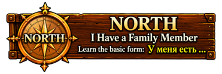
You want to tell someone:
I have …
Let's see what each part means.
Now you try it in a short conversation.
This is a common way to tell someone you have a family member. Just change the family member in the menu to see how the sentence and conversation change.
When the important idea is that someone exists / is there, we often hear есть.
When you're describing the person or thing you have, Russian often doesn't need есть.
Compare the sentences.
Where did есть go?
What is different in the second sentence?
Choose someone, then tell us more. Notice what happens to есть.
нет means there is not / I don't have.
You may also notice the family word changes a little. For now, just notice it.
The meaning stays the same: “to have a sister.”
Only the beginning changes to show WHO we are talking about.
This discovery will be built in a later step.
When we say we don't have someone, Russian often changes the ending of the family word.
You don't need to memorize the full grammar rule yet. Just notice that the ending changes when we say we don't have someone!
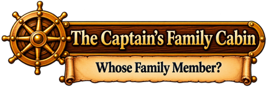
In English, we use the same word “my” for everyone.
In Russian, the word changes depending on the family word.
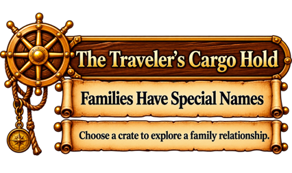
Some Russian family words are built from words you already know.
Others have one special word where English needs several.
To ask someone the same question back, you don't need a whole new sentence.
Just add А and the part that matters.
You’ve explored, discovered, and learned.
Now it’s time to open the
treasure!
Click the chest to open it.
The chest is open! Three treasures await your discovery.
Click any scroll to
explore what’s inside.
A Little Treasure About Family
Some people are more than just family. They’re special to us.
Here are some ways to
say that in Russian.
Your treasure to remember:
Russian doesn’t just help us describe our family. It
also helps us express how we feel about them.
Discover Hidden Connections
Russian can describe a family relationship in more than one way.
Sometimes a few
familiar words reveal a whole new connection!
Challenge 1 of 5
Read the English sentence.
Click the Russian words to build the correct
sentence.
You can use the words as many times as you need.
Your sentence (click words to remove them):
Russian Word Bank (you can use any word as many times as needed)
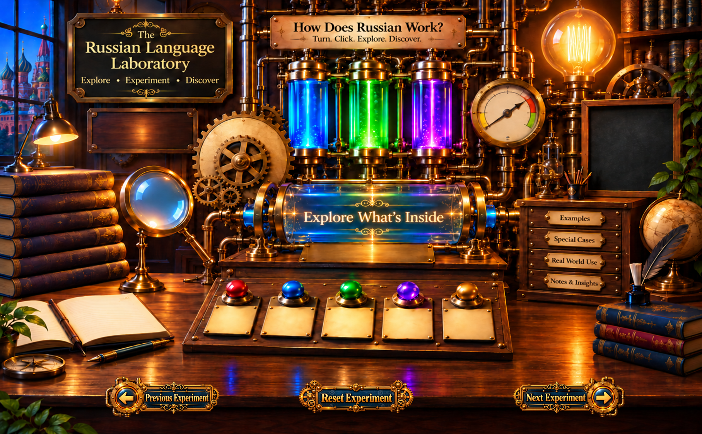
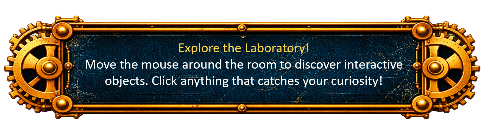
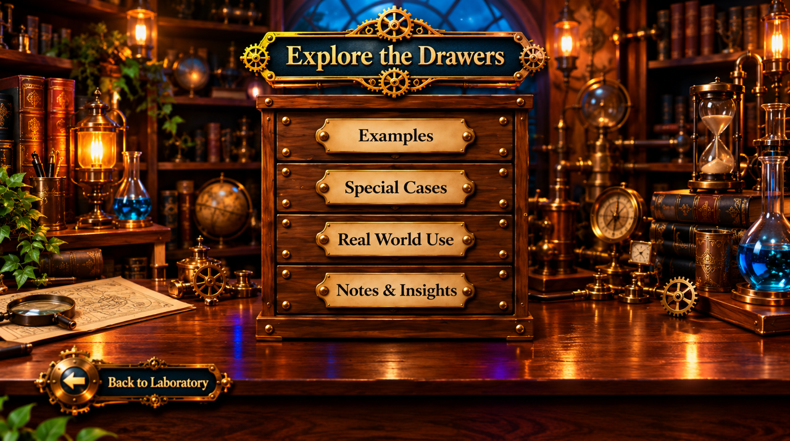
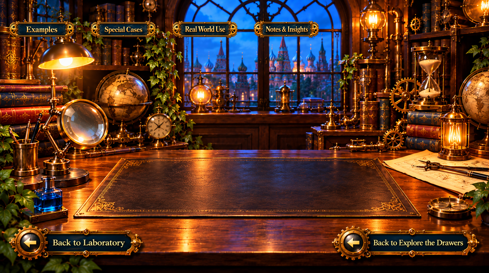
Every discovery is a new destination. Choose a platform and explore the Russian language in your own way.
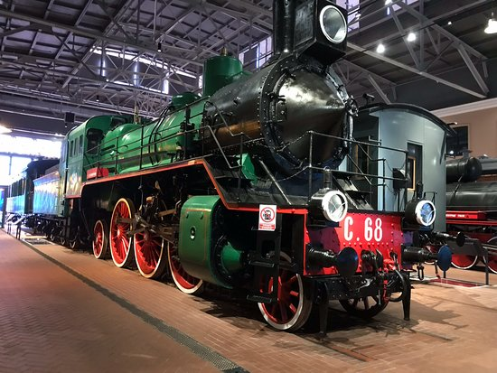
Ленинградский вокзал
Opened in 1851, Leningradsky Station connected Moscow with Saint Petersburg. Designed by Konstantin Thon, its historic clock tower recalls the early age of Russian passenger rail travel.
Explore and review the words you have encountered throughout Family Relationships.
Explore · Experiment · Use. Listen buttons use your browser's Russian voice when available.
Витебский вокзал
Russia’s first passenger railway departed from this site in 1837. The present station, opened in 1904, is celebrated for its elegant Art Nouveau architecture and grand interiors.
Return to the patterns you have discovered in Family Relationships. Remember them, experiment with them, and use them independently.
Remember · Experiment · Demonstrate. Choose any activity, listen when helpful, and reset whenever you wish.
Казанский вокзал
The present station was designed by Alexey Shchusev and built in stages during the twentieth century. Its distinctive architecture draws on Russian and Tatar influences.
Discover how everyday Russian sounds in natural, authentic conversation.
Новосибирск-Главный
Opened in 1939, this monumental railway station is a landmark of Novosibirsk and an important stop along the Trans-Siberian Railway.
This platform’s learning experience has not yet been selected.
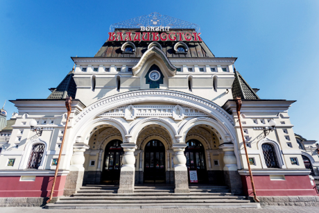
Вокзал Владивосток
Vladivostok is the eastern endpoint of the Trans-Siberian Railway. Its historic station building reflects the architectural character of Russia’s great railway era.
This platform’s learning experience has not yet been selected.
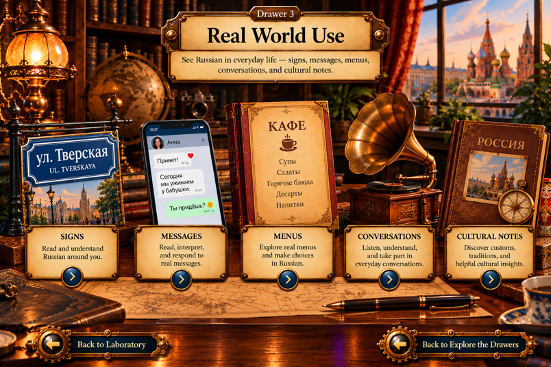
At Grandma’s
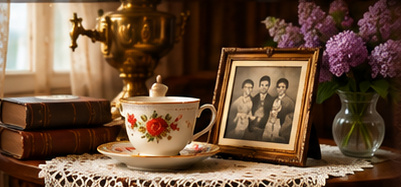
Kitchen Conversations
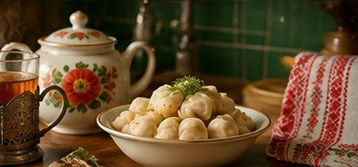
Everyday Russian — Beyond the Textbook
Celebrations
Hospitality
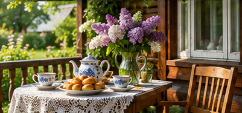
СЕМЬЯ И ДОМ
This cultural experience is ready for its learning content.
In many Russian families, babushka and dedushka are caregivers, storytellers, mentors, and treasured connections between generations.
In many Russian homes, the kitchen is where food, friendship, family memory, and honest conversation come together.
Relationships, sincerity, and context can change the meaning of a simple sentence. Choose a cultural lens, then explore a real situation.
Explore what holidays mean to families—not a checklist of customs everyone must follow. Choose a theme, then a situation.
Follow a visit from the doorway to the goodbye. Explore six cultural lenses and choose the moment you want to understand.
Another way to express warmth:
Choose a Russian place. Explore its photograph, words, and meaning.
TOUCH A RUSSIAN WORD TO EXPLORE
Подождите! Это ещё не всё?
Choose a dish to see the ruble ending change.
Select a dish to discover the rule.
Touch a highlighted Russian phrase to change its meaning.
Every word has a story. Choose a secret drawer to uncover one.
⚙ Open any drawer · No wrong order · Your discoveries stay with you
Select WHAT, WHY, HOW, or WHEN on the right to investigate this change.
Select a word. Watch the Russian word for MY change.
English uses one word: my. Russian changes it to match the noun.
0 of 4 expressions examined
Explore all four words. Notice how MY changes.
Select a word to begin your investigation.